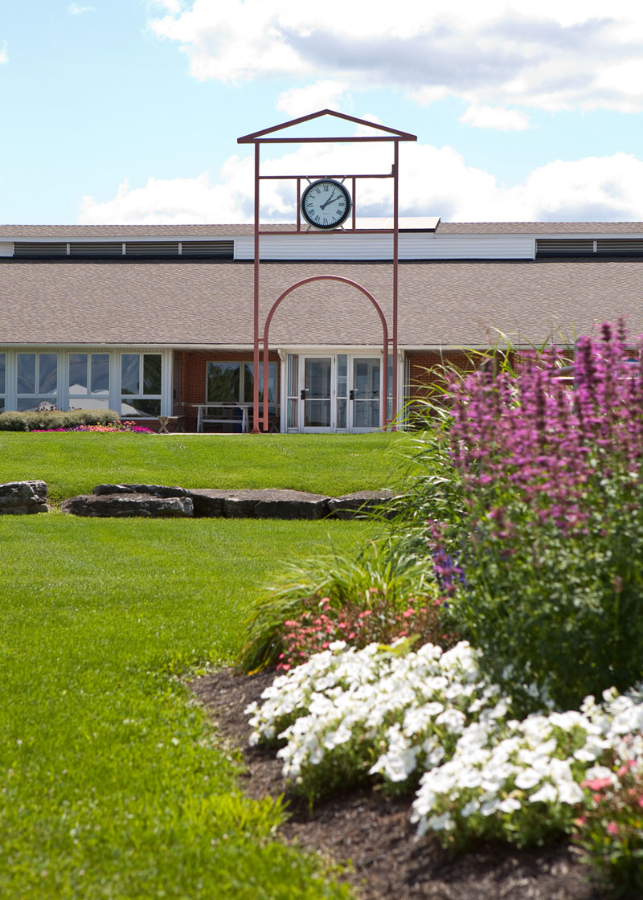
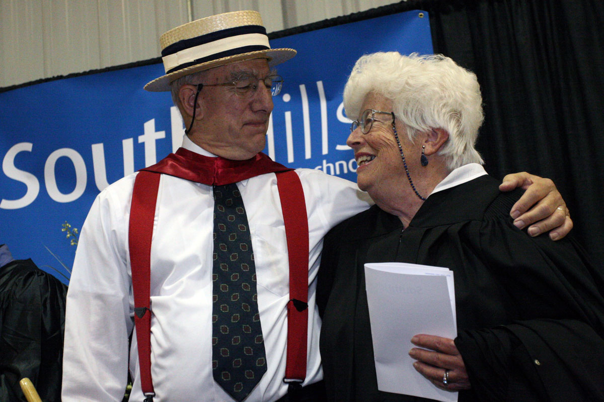

South Hills School of Business & Technology is a fully accredited post-secondary school specializing in training adults for productive and fulfilling careers and lives.
Through a variety of specialized associate degree, certificate, continuing education, and professional development programs, we prepare people for their first job, job advancement, or a new career. Established to fill a regional need for more specialized skills training in central Pennsylvania, South Hills has three convenient campuses and highly touted programs in business, technology, health, criminal justice, and graphic arts. Our students range from recent high school graduates to returning adults looking for a new skill set or a new opportunity.
The mission of South Hills School of Business & Technology is to offer qualified individuals the means to start and the encouragement to continue the lifelong growth process through higher education. In addition, South Hills School of Business & Technology has the obligation to create an educational atmosphere that will not only foster the highest standards of excellence in all students but also help those students to develop an awareness of social responsibility and ethical behavior.
Founders Paul (1930-2013) and Maralyn Mazza created South Hills School of Business & Technology in 1970 when they saw the need for more specialized skills training in central Pennsylvania. Since then, more than 6,000 graduates have earned their specialized associate degrees and gone on to lead successful careers. Paul and Maralyn believed in “Teaching People, Changing Lives,” a timeless ideal that continues to inspire faculty, staff, and students.
